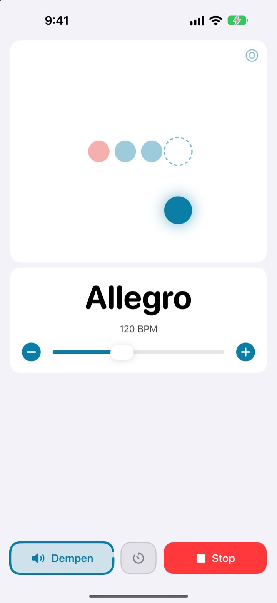
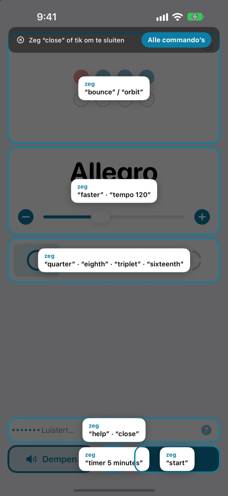
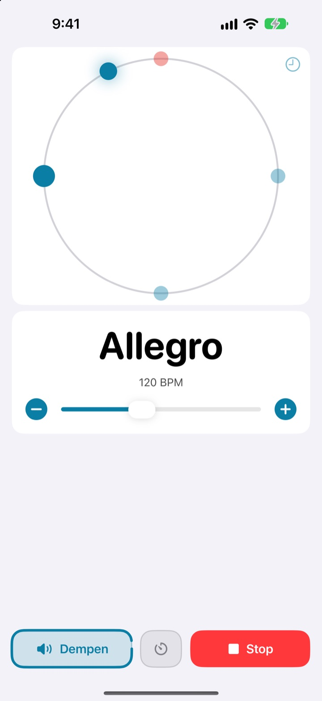
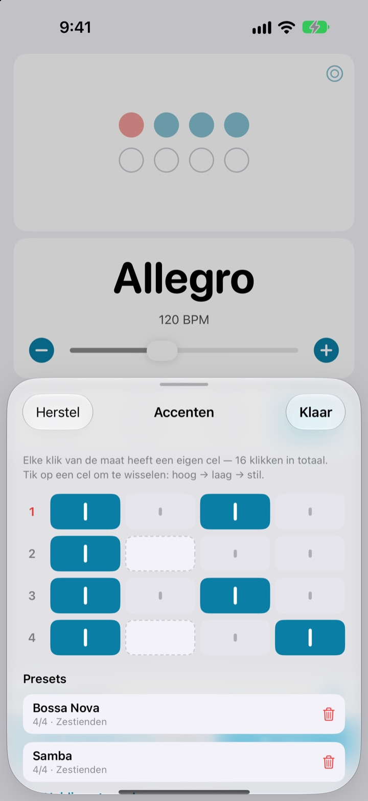

Handen op je instrument.
Tempo met je stem.
Zeg midden in een frase faster en de klik gaat sneller. Niet stoppen, niet naar het scherm grijpen. De commando’s zijn korte Engelse woorden.
De complete metronoom en spraakbediening zijn gratis.

Probeer het hardop
Tik op een commando, of zet de microfoon aan en zeg het in het Engels. Zet je volume hoger, hij klikt.
Ooit de groove kwijtgeraakt alleen om het tempo bij te stellen?
Strijkstok neerleggen, plectrum tussen je tanden, twee keer op het scherm tikken, en het gevoel dat je net te pakken had is weg. Met Not My Tempo verander je het tempo met één woord, zonder je houding los te laten.
Zeg het, en hij volgt
Korte Engelse woorden als start, faster en tempo 120. De app luistert zodra je hem opent, zonder dat je Spraakbediening van iOS of een toegankelijkheidsinstelling hoeft aan te zetten.
Commando vergeten? Zeg help en alles wat je kunt zeggen staat op het scherm.

Zie de tel ook
Kies tussen stuiteren, baan of ring. De eerste tel is rood en klikt harder.
Tik mee op de baan en je ziet hoe dicht je erbij zat.

Bewaar de accenten per nummer
Zet elke klik in de maat op hoog, laag of stil en bewaar het als preset. Bouw je bossanova- of sambapatroon één keer en kies het de volgende keer gewoon uit de lijst. (Pro)

In drie stappen aan de slag
- 1
Open de app
Hij luistert meteen.
- 2
Geef de microfoon toegang
De eerste keer vraagt hij om microfoon en spraakherkenning.
- 3
Praat of tik
Elk commando heeft ook een knop op het scherm.
Wat je kunt zeggen
- start · stop
- afspelen, pauzeren
- faster · slower
- 5 BPM sneller of langzamer
- up · down
- 1 BPM sneller of langzamer
- tempo 120
- direct naar een tempo
- double · half
- twee keer zo snel, half zo snel
- three beats
- maatsoort wijzigen
- quarter · eighth · triplet · sixteenth
- onderverdeling in kwarten, achtsten, triolen, zestienden
- louder · quieter · mute
- klik harder, zachter, dempen
- volume 60
- volume in procenten instellen
- bounce · orbit
- telweergave wisselen
- timer 5 minutes
- oefentimer instellen
- practice
- tempo loopt op terwijl je oefent (Pro)
- tune
- de tuner openen (Pro)
- help
- alle commando’s tonen
- close · done
- een paneel sluiten
De spraakherkenning werkt in Amerikaans Engels, dus je zegt de commando’s in het Engels. De app zelf is in het Nederlands en elk commando kan ook met een tik.
De metronoom is gratis. Wil je meer, dan is er Pro.
Gratis
- Alle spraakcommando’s
- Maatsoorten van 1 tot 8 tellen, met een sterkere eerste tel
- Onderverdeling in kwarten, achtsten, triolen en zestienden
- Drie weergaven: stuiteren, baan en ring
- Tap-tempo en timingcontrole
- Oefentimer
Not My Tempo Pro
- Oefenmodus: om de paar maten een paar BPM erbij tot je je doeltempo haalt
- Accenteditor met presets per nummer
- Chromatische tuner
Jaarabonnement met gratis proefperiode, of een eenmalige aankoop voor altijd
Spraakbediening en toegankelijkheidsfuncties blijven voor iedereen gratis. Had je de app al vóór Pro? Dan heb je alle Pro-functies al.
Veelgestelde vragen
Kan ik Nederlands spreken?
De spraakherkenning werkt in Amerikaans Engels, dus de commando’s zijn korte Engelse woorden zoals start en faster. Die heb je snel onder de knie, en elk commando kan ook met een tik. De rest van de app is in het Nederlands.
Hij hoort me niet.
Controleer of de microfoonstatus “Luistert” is. Staat hij uit, tik dan op “Luister”. In een rumoerige ruimte of als je via de speaker speelt, helpen oordopjes: dan lekt de klik niet in de microfoon.
Het luisteren ging vanzelf uit.
Om batterij te sparen stopt het luisteren als er een paar minuten geen commando komt. Tik op “Luister” om het weer aan te zetten.
Het tempo is de helft of het dubbele.
Zeg double of half om het te corrigeren.
Hoe gebruik ik de tuner?
Zeg tune of tik op de golfknop op de tempokaart. Speel een noot: komt de indicator in de groene zone, dan ben je zuiver. Zeg close om te sluiten.
Ik gebruik al Spraakbediening van iOS.
Zet de eigen microfoon van de app uit en bedien hem met de namen van de knoppen. Elke knop heeft een VoiceOver-label.
Wordt mijn stem ergens naartoe gestuurd?
Nee. Spraak wordt op je apparaat herkend en nooit opgenomen, bewaard of verstuurd. De metronoom, spraakbediening en tuner werken ook zonder internet.
Hoe zeg ik mijn abonnement op?
Via Instellingen > Apple Account > Abonnementen. Het jaarabonnement wordt automatisch verlengd, tenzij je het minstens 24 uur voor het einde van de periode opzegt. Levenslang betaal je één keer.
Vragen of feedback? Mail naar leeo@kakao.com.